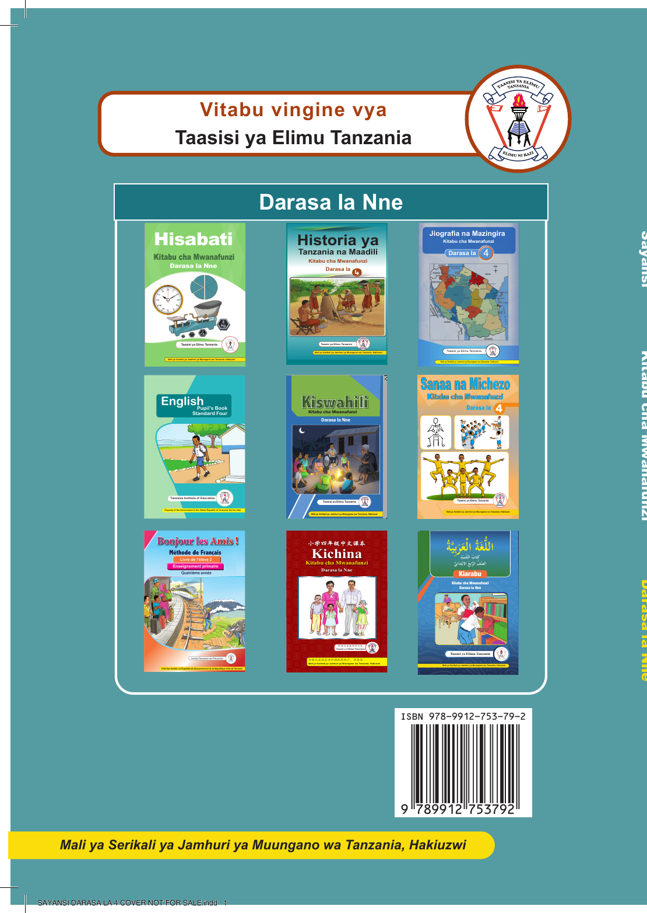

Jalada la nyuma la kitabu cha Sayansi Darasa la Nne
Maelezo ya picha: Jalada la nyuma la kitabu cha Sayansi Darasa la Nne lenye mandhari ya kijani na bluu. Kuna mti mkubwa katikati, watoto wawili karibu na sehemu ya chini, maandishi ya Taasisi ya Elimu Tanzania, pamoja na utepe wa njano wenye maandishi Mali ya Serikali ya Jamhuri ya Muungano wa Tanzania, Hakiuzwi.

Maelezo ya picha: Jalada la nyuma la kitabu cha Sayansi Darasa la Nne lenye mandhari ya kijani na bluu. Kuna mti mkubwa katikati, watoto wawili karibu na sehemu ya chini, maandishi ya Taasisi ya Elimu Tanzania, pamoja na utepe wa njano wenye maandishi Mali ya Serikali ya Jamhuri ya Muungano wa Tanzania, Hakiuzwi.